Uber Data Visualizations
Across Uber, teams rely on data visualizations to drive decisions and insights. We’ve created a unified system that empowers every team to seamlessly create, present, and explore charts, ensuring consistency, clarity, and impact in data storytelling across the organization.
I led the design efforts to translate a range of use cases into a flexible, company-wide visualization framework and guidelines. My role spanned from refining micro-interactions—like hovers, color palettes, typography, opacity, and line thickness—to crafting a cohesive, big-picture approach that ensures all elements work harmoniously. This foundation empowers teams across the organization to create consistent, impactful visualizations with ease.
Behind the Scenes
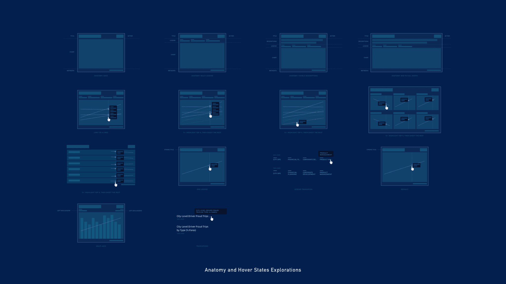
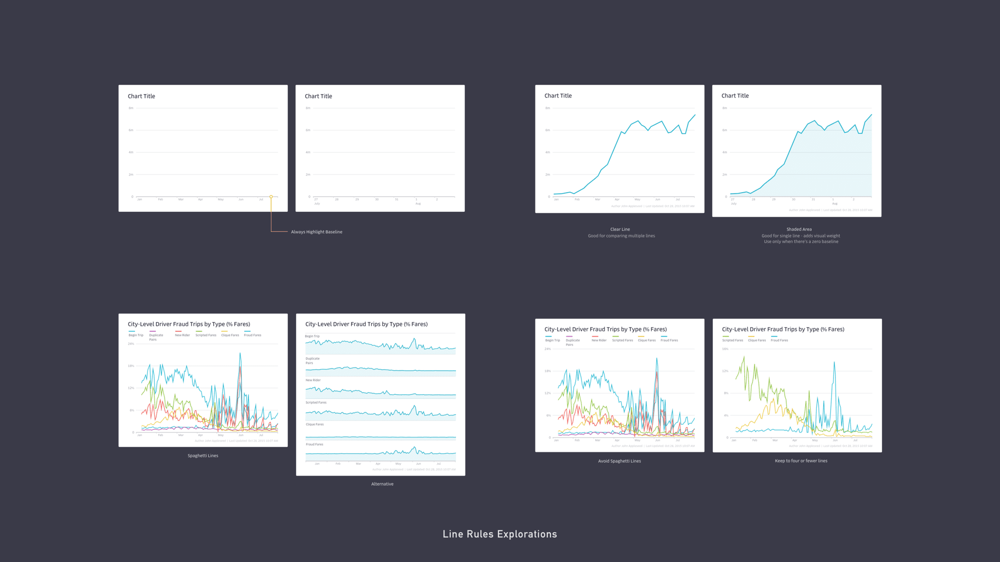
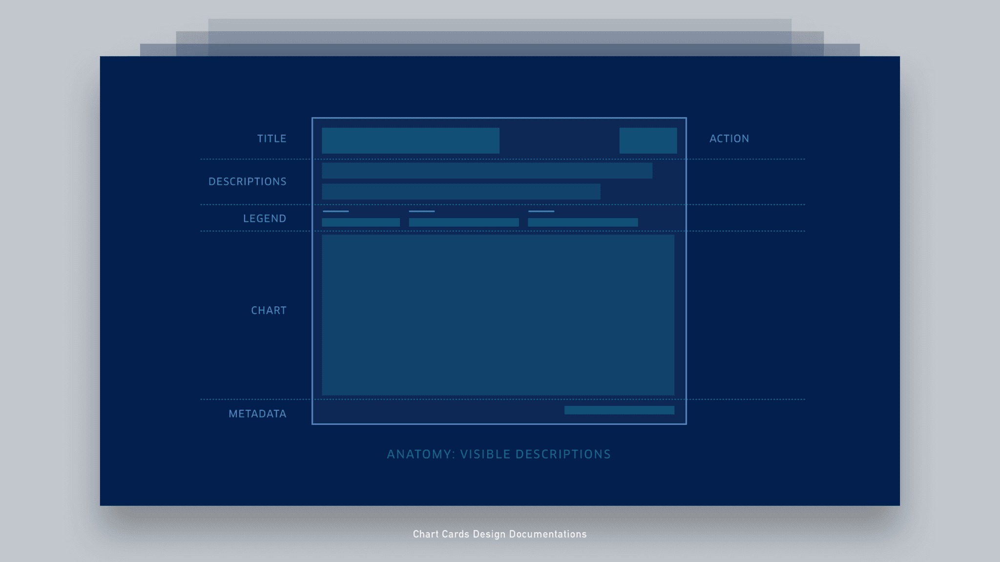
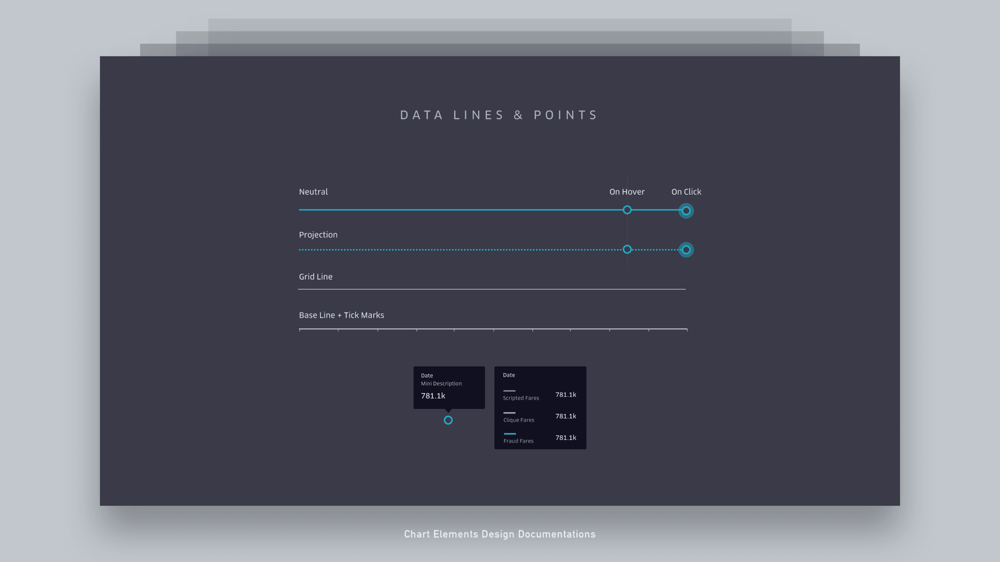
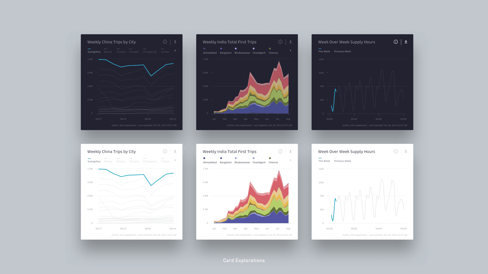
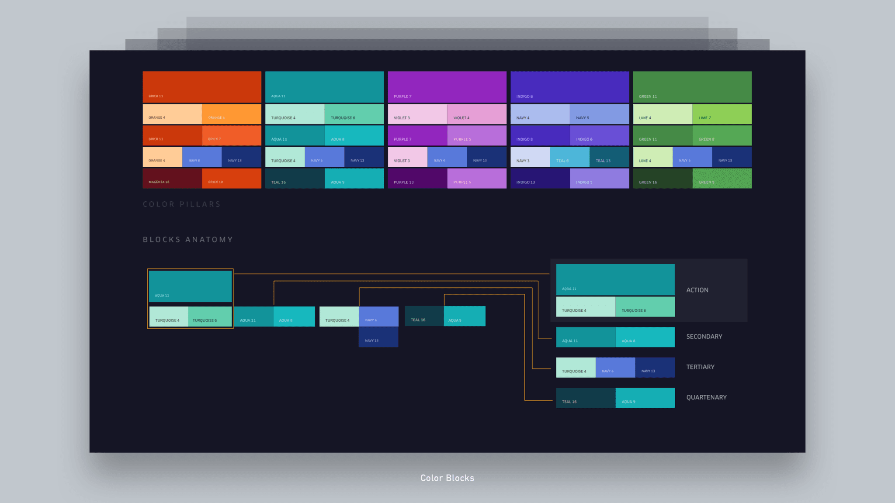
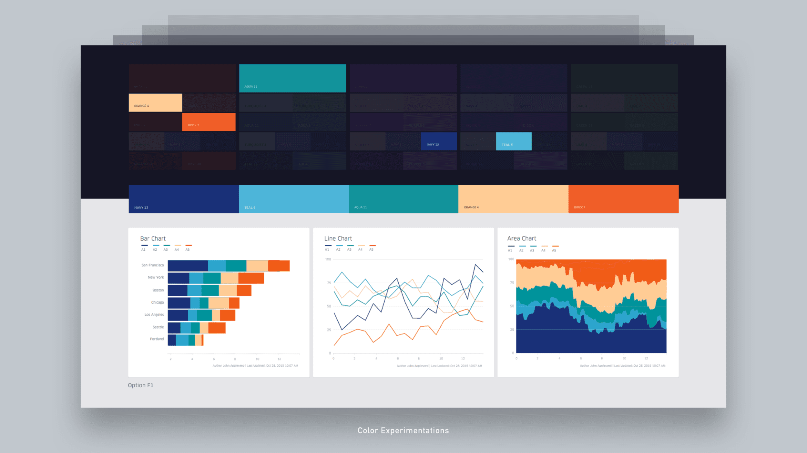
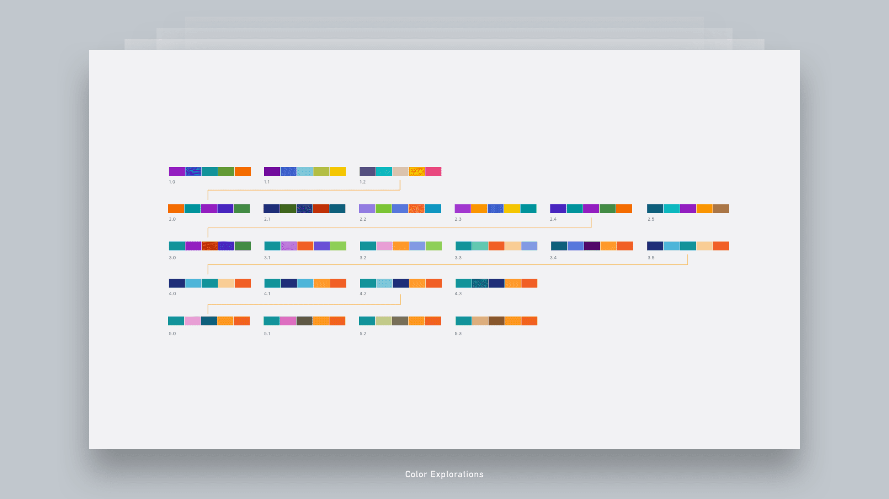
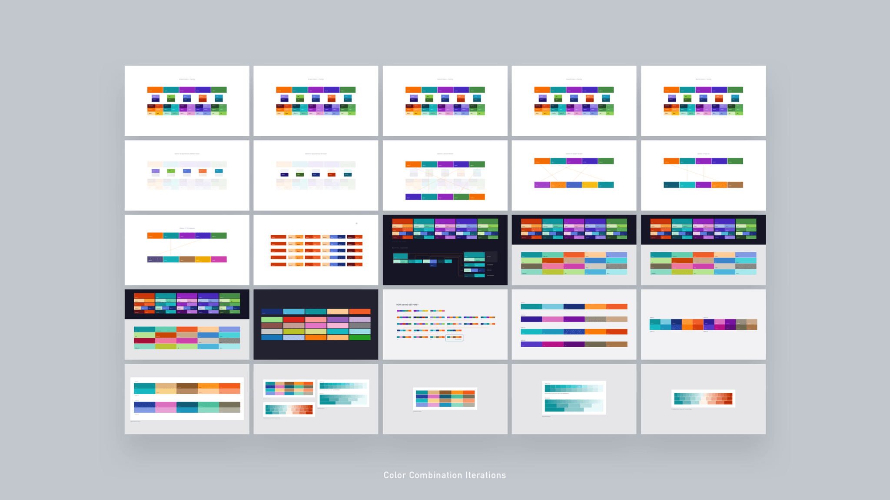
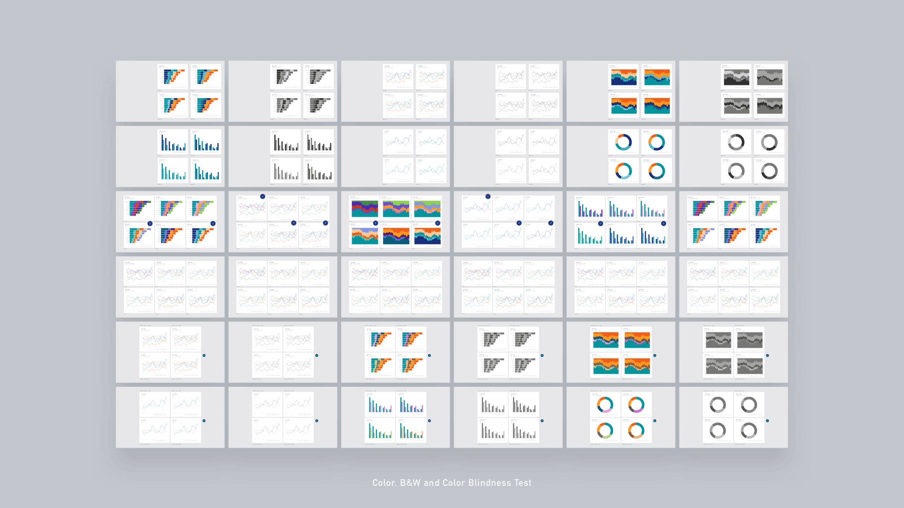
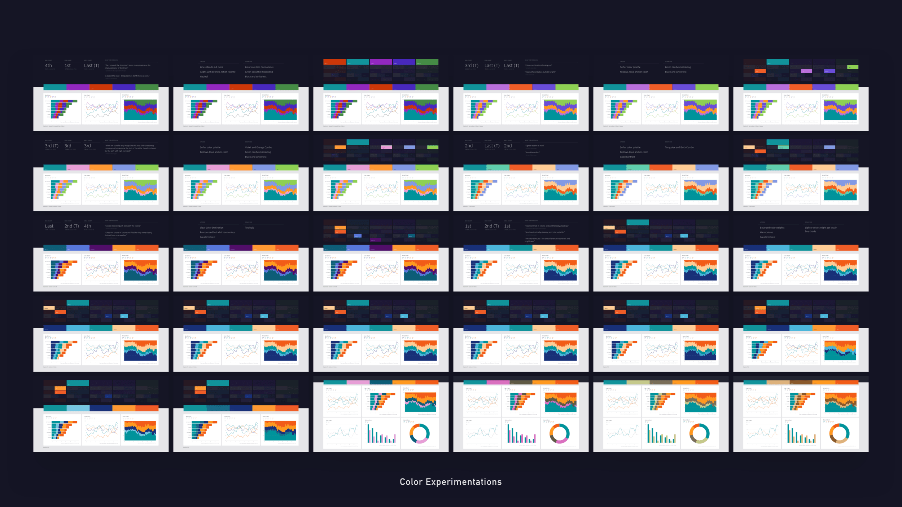
Final Product
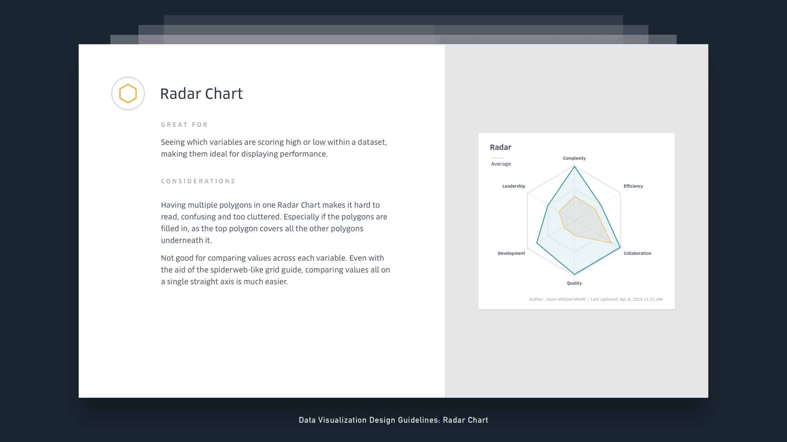
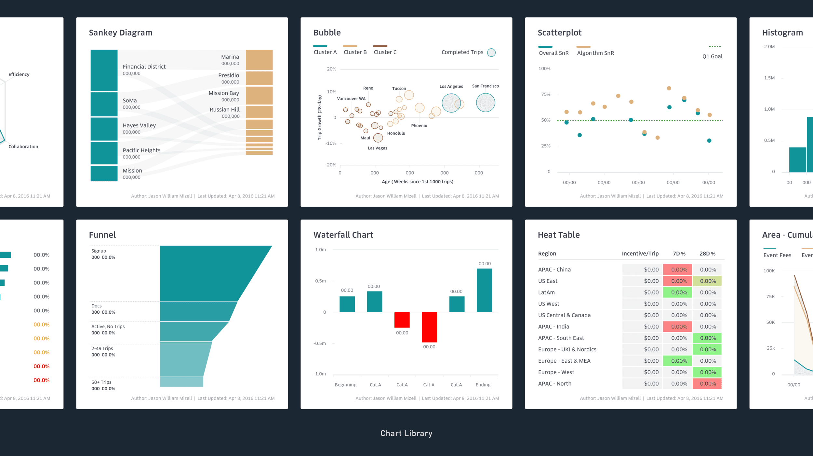
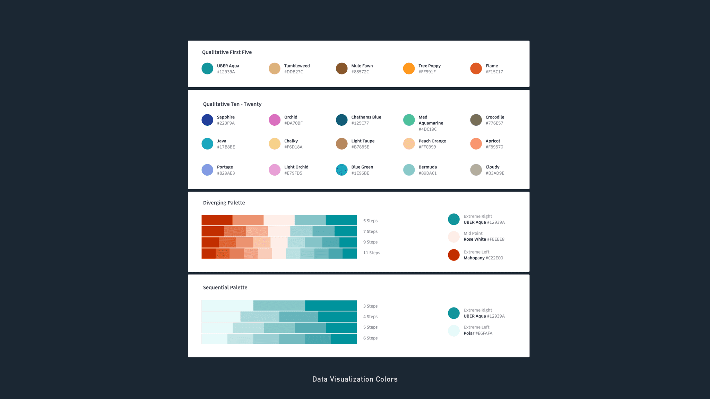
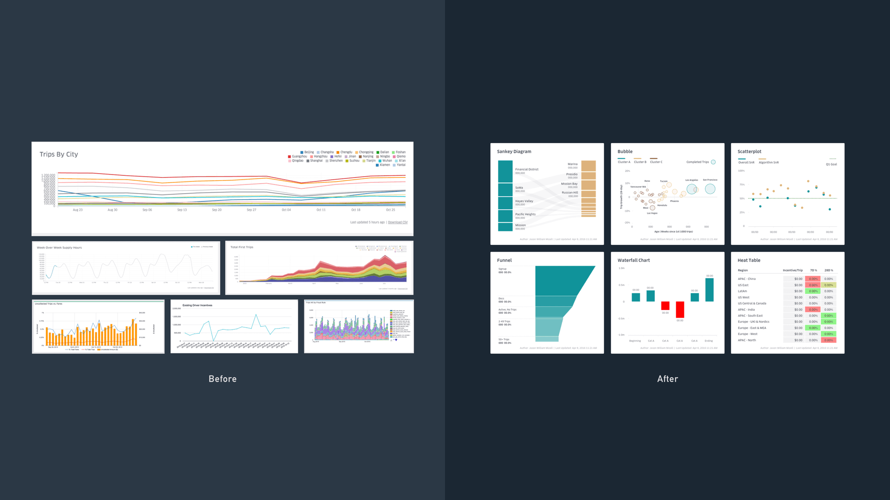
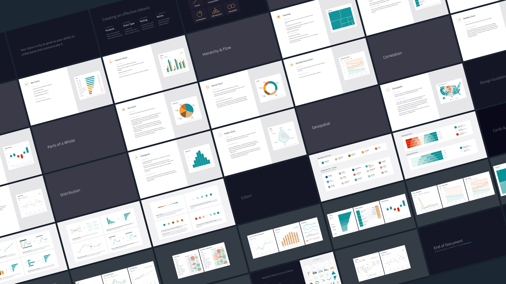
Design Notables
Extensive Color Exploration
Over 100+ color combinations were meticulously tested, balancing contrast, progressions, and hue variations to ensure clear, engaging visual communication.
Stress-Tested for Accessibility
Each design was rigorously tested across scenarios including colorblind modes, projector displays, high contrast, and print formats, ensuring accessibility and reliability in all environments.
Comprehensive Charting Framework
Multiple chart types were designed with detailed usage guides, covering diverse data scenarios. Sketch templates were included to streamline future design and development.
Guided for Key Use Cases
Addressed critical data needs for both presentation and exploration modes, providing targeted guidelines for axis lines, hovers, and legends, enhancing usability from a tooling perspective.